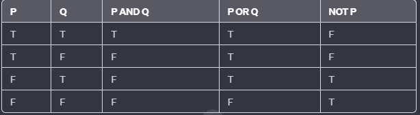

Diagrama de Venn:
Utilizado para representar as relações entre conjuntos. Por exemplo, se A e B são conjuntos, a sobreposição entre os círculos pode representar a interseção dos conjuntos.
Tabelas-Verdade:
Usadas na lógica booleana para mostrar todas as combinações possíveis de valores de verdade para proposições.

Árvores de Decisão:
São usadas em lógica de programação e algoritmos. Cada nó representa uma condição, e os ramos representam as possíveis saídas.
Diagrama de Fluxo:
Comumente usado em programação e análise de processos. Mostra o fluxo de controle entre diferentes partes de um sistema.